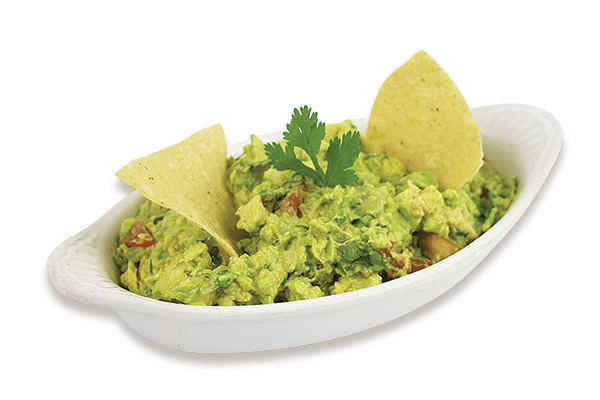
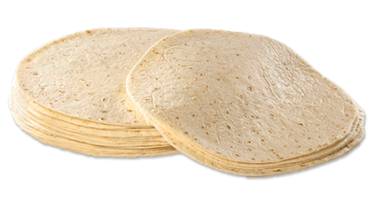
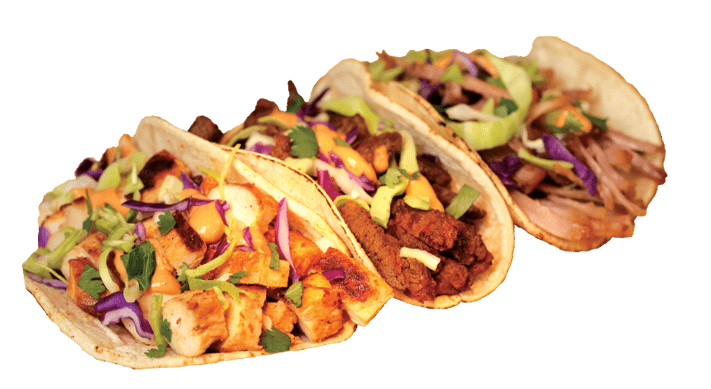

Our Menu
Fresh Guac
 Guac ipsum dolor amet tongue ball tip porchetta corned beef, t-bone ribeye bacon. Kielbasa pig sausage venison cow corned beef picanha buffalo. Prosciutto leberkas turkey, biltong hamburger boudin shoulder tenderloin filet mignon tongue picanha beef ribs ribeye frankfurter sausage. Chicken turkey prosciutto chuck shankle kielbasa kevin ham hock ball tip pork loin. Bresaola pancetta jerky tenderloin sausage fatback corned beef turkey bacon sirloin rump ribeye kielbasa. Venison jowl pork belly ball tip prosciutto short ribs.
Fresh Tortillas
 Tortilla ipsum dolor amet tongue ball tip porchetta corned beef, t-bone ribeye bacon. Kielbasa pig sausage venison cow corned beef picanha buffalo. Prosciutto leberkas turkey, biltong hamburger boudin shoulder tenderloin filet mignon tongue picanha beef ribs ribeye frankfurter sausage. Chicken turkey prosciutto chuck shankle kielbasa kevin ham hock ball tip pork loin. Bresaola pancetta jerky tenderloin sausage fatback corned beef turkey bacon sirloin rump ribeye kielbasa. Venison jowl pork belly ball tip prosciutto short ribs.
Burrito
 Burrito ipsum dolor amet tongue ball tip porchetta corned beef, t-bone ribeye bacon. Kielbasa pig sausage venison cow corned beef picanha buffalo. Prosciutto leberkas turkey, biltong hamburger boudin shoulder tenderloin filet mignon tongue picanha beef ribs ribeye frankfurter sausage. Chicken turkey prosciutto chuck shankle kielbasa kevin ham hock ball tip pork loin. Bresaola pancetta jerky tenderloin sausage fatback corned beef turkey bacon sirloin rump ribeye kielbasa. Venison jowl pork belly ball tip prosciutto short ribs.
Burrito ipsum dolor amet tongue ball tip porchetta corned beef, t-bone ribeye bacon. Kielbasa pig sausage venison cow corned beef picanha buffalo. Prosciutto leberkas turkey, biltong hamburger boudin shoulder tenderloin filet mignon tongue picanha beef ribs ribeye frankfurter sausage. Chicken turkey prosciutto chuck shankle kielbasa kevin ham hock ball tip pork loin. Bresaola pancetta jerky tenderloin sausage fatback corned beef turkey bacon sirloin rump ribeye kielbasa. Venison jowl pork belly ball tip prosciutto short ribs.
Taco Platter
 Burrito ipsum dolor amet tongue ball tip porchetta corned beef, t-bone ribeye bacon. Kielbasa pig sausage venison cow corned beef picanha buffalo. Prosciutto leberkas turkey, biltong hamburger boudin shoulder tenderloin filet mignon tongue picanha beef ribs ribeye frankfurter sausage. Chicken turkey prosciutto chuck shankle kielbasa kevin ham hock ball tip pork loin. Bresaola pancetta jerky tenderloin sausage fatback corned beef turkey bacon sirloin rump ribeye kielbasa. Venison jowl pork belly ball tip prosciutto short ribs.